Good ideas are everywhere. Executing them is the design.
I design mechanics and experiences that challenge players while giving them the freedom to find their own way forward. I am a video game designer and computer engineering student.
Teleport anywhere you want. Throw a fragile sphere and warp to it, open up the map with new spheres and layers, then repair your crashed jet and fly out in a shoot-'em-up.
Role
Solo: game design, systems design, level design and story, plus the level and wave editors
Development
About three weeks, from the first ideas to the playable demo
Needs a keyboard and mouse. Click the game once so it takes the keyboard. Open on its own page ↗
On foot
ADmove
Spacejump
Left clicksword thrust
Hold right clickaim
+ Left clickthrow
Kteleport or detonate
EQswitch sphere, sword
Wtalk, board, travel
Mmap
In the jet
WASDfly
Hold Jfire the beam
Qswitch beam
Escpause
The idea
Warpbound was my first project idea ever. I knew the idea was good, but I also knew I didn't yet have the design skill to make it good. So I started with something very small, FiveTen, then a shoot-'em-up. After those two I came back with far more knowledge and experience, to a genre I love.
Teleportation isn't new. Metroidvanias like Bloodstained: Ritual of the Night already have it. I wanted to make it the core mechanic, the identity of the whole game. The game that really inspired me was Velocity 2X. I loved its teleportation, and it mixes shoot-'em-up levels with platforming levels. Both ideas ended up in Warpbound.
Teleport anywhere you want.
The demo is a 22-room desert map with three types of sphere, two elemental swords, six enemy types, two bosses and a crashed jet you repair. Once the jet flies, the game turns into an eight-wave shoot-'em-up that ends the demo.
The design problem is freedom
The idea was never the problem. If the player can teleport a lot, at any time, they can skip a level completely, and ordinary platforming stops meaning anything. The level design has to be much more specific than usual.
How much freedom can I give the player before the level design stops mattering?
The player has to feel free, but that freedom has to be controlled enough for the design to still speak. Every power gets a limit:
Limit
What it does
One sphere at a time
No spamming, and it's always clear where you'll teleport.
The sphere is fragile
It breaks on the first wall, so it can't bounce around corners to reach anywhere.
8-direction aim
Throws have to be lined up, so alignment matters.
Challenge rooms
The sphere doesn't work at all inside them.
Locked rewards
Most rewards sit behind keys or objectives, like defeating every enemy.
Fewer platforming rewards
Platforming alone is easy to teleport past, so it rarely guards a reward.
Tool-specific obstacles
Some enemies and walls only give way to one ability.
The demo also gives the player their end-game power on purpose. In the full game you start without the sphere and earn everything over the whole adventure. Being able to skip whatever you want near the end is the reward for playing and finishing, which suits a metroidvania. The demo shows that final form.
How it plays
Explore
Hit a wall you can't pass
Remember it
Find an ability
Return
Repair the jet
Fly
Moment to moment, you read the room, hold right click to aim in one of eight directions, and throw. While the sphere flies you decide: teleport to it, let it break, cancel it, or, with the bomb, set it off. Then you land and fight with the sword, switching swords or spheres as the room asks.
Design decisions
A sphere, not an arrow
ProblemMy first idea was an arrow: shoot it, then teleport to where it lands. If the arrow deals damage whether you teleport or not, there's no challenge left. You can stay far away and kill every enemy with it.
DecisionThe story came first and narrowed it to a sphere: the hero is a jet pilot, and the TPS is the scientific weapon the story revolves around. Then I split the arrow's two jobs apart. The normal sphere moves you. It can still hit an enemy for 1 damage, but the hit destroys it, so you lose the teleport. The bomb sphere fights, but setting it off takes the place of the teleport.
You can have damage and you can have teleporting, but never both in a single item.
Every rule of the sphere has a reason
Breaks on the first wallIn the story the TPS is fragile. In play, it stops the sphere bouncing round corners to reach anywhere, and it gives layers something to upgrade.
One sphere at a timeThrow three, then press teleport: which one do you go to? The logical answer, the first, makes the other two useless. Several spheres would also be confusing, and even more so in combat.
Eight directionsFree aim would be overpowered. Eight directions give alignment a purpose and feel good in platforming.
Separate throw and teleport buttonsBecause of the sticky wheel. You keep holding the aim button and steer it with WASD, so one shared button wouldn't work.
LandingYou arrive centred on the sphere if there's room. If not, you need two empty tiles stacked vertically, the sphere's tile plus the one above or below, and you're fitted into that column as close to the sphere as possible. It keeps teleporting smooth and fair.
R325 × 15 tiles
R3 teaches by failure, with no text. A jump clears the first gap and not the second, so you throw and teleport. Falling short drops you into quicksand, which gives you time to climb out.
Layers let rooms ask for an exact strength
DecisionEach layer lets the sphere survive one more contact: a bounce off a wall, or a pass through a sandfall. That lets me build a room for an exact number of layers. A room with four sandfalls and an upgrade behind them can't be crossed with three, so you remember it and come back with four. That's a typical metroidvania room.
Layers are drawn as rings around the sphere. A growing sphere would eventually need collision of its own. The normal sphere's rings are golden, so a fully upgraded sphere turns gold. Each sphere type keeps its own layers, because they're different spheres.
Sphere
Base layers
Upgrades in the demo
Maximum
Normal (gold)
1, or 3 with Matryoshka
+1 × 3
6
Sticky wheel (green)
1
+1 × 1, hidden
2
Bomb (red)
1
+1 × 3
4
R4the sandfall gate
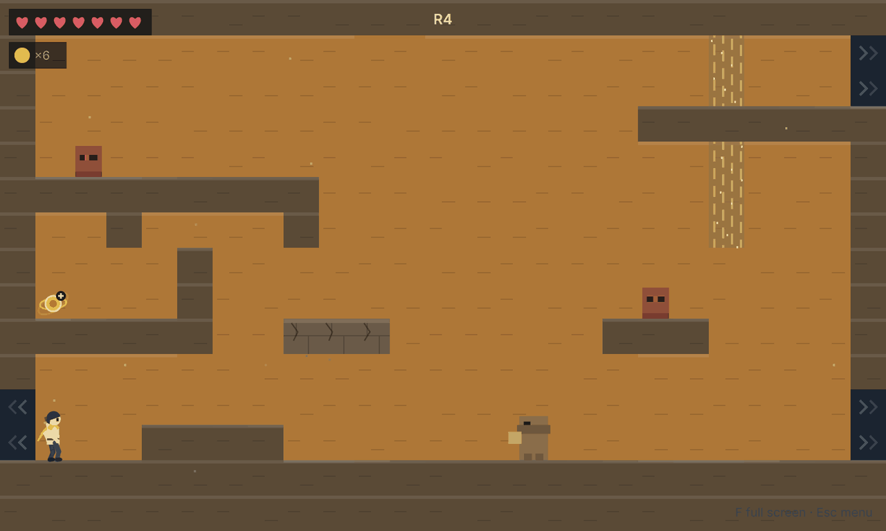
The high road ends at a sandfall. Only a sphere with layers survives the crossing, so the player comes back after the Matryoshka upgrade in R9.
Three spheres, three kinds of puzzle
Sticky wheelSticks to the surface it hits. Hold right click and steer with WASD to roll it up walls, round corners and across ceilings. It opens puzzles where bouncing isn't useful, and spaces where you wait for enemies to move before going on. It breaks on enemies and spikes, because at its core it's still a TPS.
Bomb sphereAn attack and a puzzle solver: a 64 px blast for 3 damage that breaks cracked walls, crumbly floor and a guardian's guard. It only goes off when you press the button. Think of it as C4. It would be weird if it went off by itself, so I switched off "explode when out of layers".
A thrust, not a slash, and swords that change the world
DecisionThe sword used to swing in an arc. I replaced it with a straight thrust toward the cursor in eight directions, because I want players to be precise, not to spam the attack button. Direction adds a dimension to combat, and positioning starts to matter.
The elemental swords follow common sense: if you have ice, you'd expect it to affect the world. It rewards players for thinking logically, and permafrost and very hot lava let a room say "not with this sword".
Sword
Effect on the world
Can't affect
Fire sword
Melts ice into water
Permafrost
Ice sword
Freezes lava into solid rock, and water into ice
Very hot lava
R13lava, the fire sword, a locked jet part
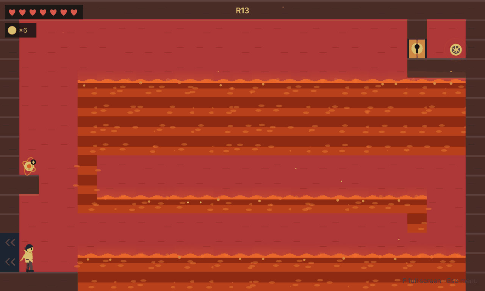
The fire sword sits between the bands of lava. The jet part in the top corner waits behind a door whose key is in R12.
Some enemies ignore your sword
ProblemI wanted players to use their items, and to use them in different ways.
DecisionForcing a particular ability is a common design tool. The eater turns enemies against each other: bait the turret into shooting it.
Enemy
Behaviour
How to beat it
Turret
Fixed, fires shots
Sword or sphere
Eater
Swallows your sphere
The sword only stuns it. A turret shot, a falling spike or a bomb kills it.
Absorber
Its 84 px field catches the sphere and spirals it in. You can't teleport out.
Avoid its field, or set a bomb off inside it.
Brute
Walks at you and winds up a punch. Only the punch hurts.
Sword hits stagger it and interrupt the punch.
Flyer
Hovers and drifts
A sphere hit or a turret shot knocks it down for 3 s.
Guardian
Its guard blocks everything, and spheres glance off it.
A bomb blast breaks the guard, then attack.
Bosses built on the sphere
The Hedgehog, R8He fires three spines, charges to a column of cracked ceiling spikes and parks right under it. Quicksand slows the charge. You knock the spikes down onto him, three hits. He's the exam for R6, the room where you first learn that cracked spikes can be knocked down. Next revision: a falling spike will stun him, and the sword will finish him.
R8the Hedgehog
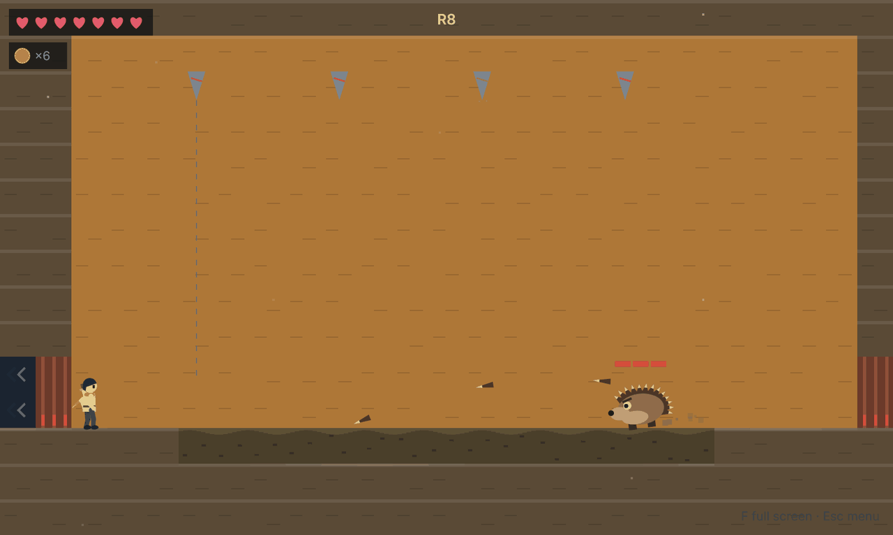
Four cracked spikes over quicksand. The gates on both sides open when he's down.
The Slugger, R21He came from a simple thought: the sphere bounces. A bouncing ball? Tennis. He bats your sphere straight back at you. A bomb knocks his guard down for a few seconds without ever hurting him, and that's your window to hit him with the sword. His gate hides a jet part.
R21the Slugger
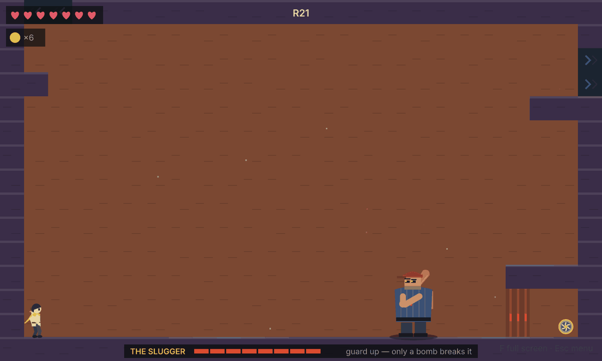
"Guard up — only a bomb breaks it." The jet part waits behind the gate on the right.
Open at a crashed jet, because you'll fly it
DecisionThe game opens at Namir's wrecked jet. It needs three parts, and each comes from a different approach to the same problem. A mechanic is sealed behind fallen rock next to the wreck: blow the wall open with the bomb sphere and he gives you the part that landed beside him. The second is behind a locked door at the end of a lava room, with its key in another room. The third is behind the Slugger's gate, reached through a cracked floor in the very first room.
R1the crash site
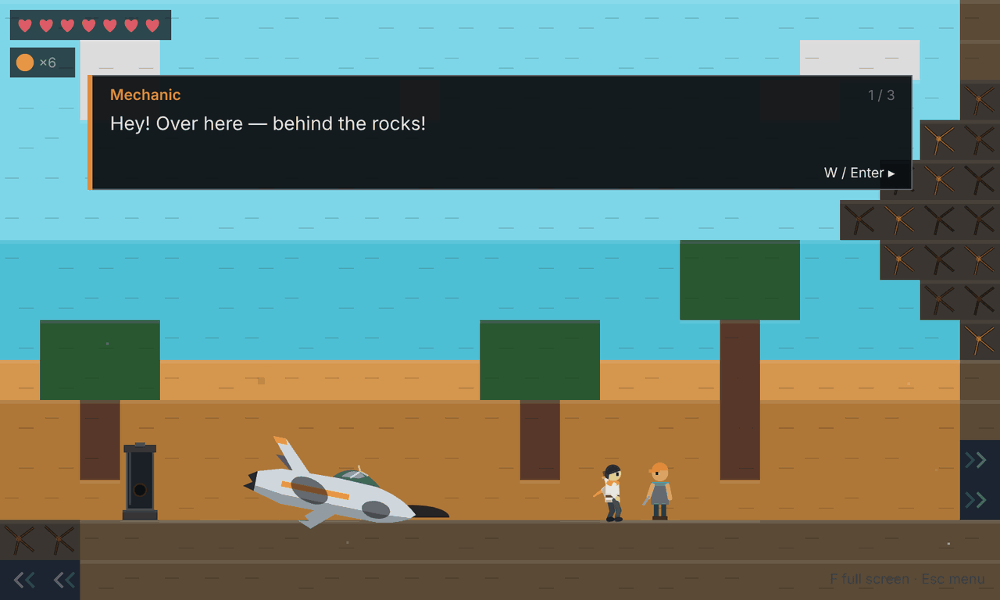
"Hey! Over here — behind the rocks!" The mechanic is sealed behind the cracked wall on the right. The capsule by the jet is one of three fast-travel points.
A shoot-'em-up whose rules come from the swords
DecisionFrom the start the game had two kinds of sequence: the metroidvania map and shoot-'em-up flights. In the full game the jet is how you travel between biomes, and your current equipment decides its beams. With both swords the beam switches between normal, ice and fire, and every enemy is hurt by only one of them, so you read each enemy's element and switch beams constantly.
Enemy
Element
Hurt only by
Shot
Drone
Normal
Normal beam
Aimed at you
Frost wing
Ice
Fire beam
Straight ahead
Ember wing
Fire
Ice beam
Three-shot spread
Flight · wave 2, Cold frontbeam: normal
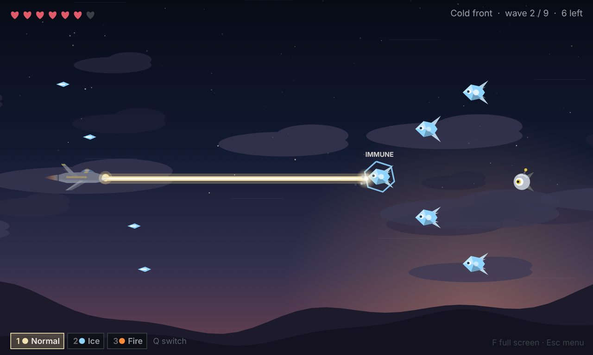
The normal beam on a frost wing: "IMMUNE". Only the fire beam hurts it.
The demo's flight has eight waves: Take-off, Cold front, Embers, The escort, Pillar run, The vault, Crossfire and Last stand. Some add moving terrain or walls and doors, and some react as they thin out: when the gunner falls the rest enrage, and when one is left they all dive. Being shot down only retries the current wave. Back on the ground, three fast-travel capsules, each powered by throwing a sphere into it, take the place of the fast-travel machines the full game puts in every biome.
Flight · wave 5, Pillar runmoving terrain
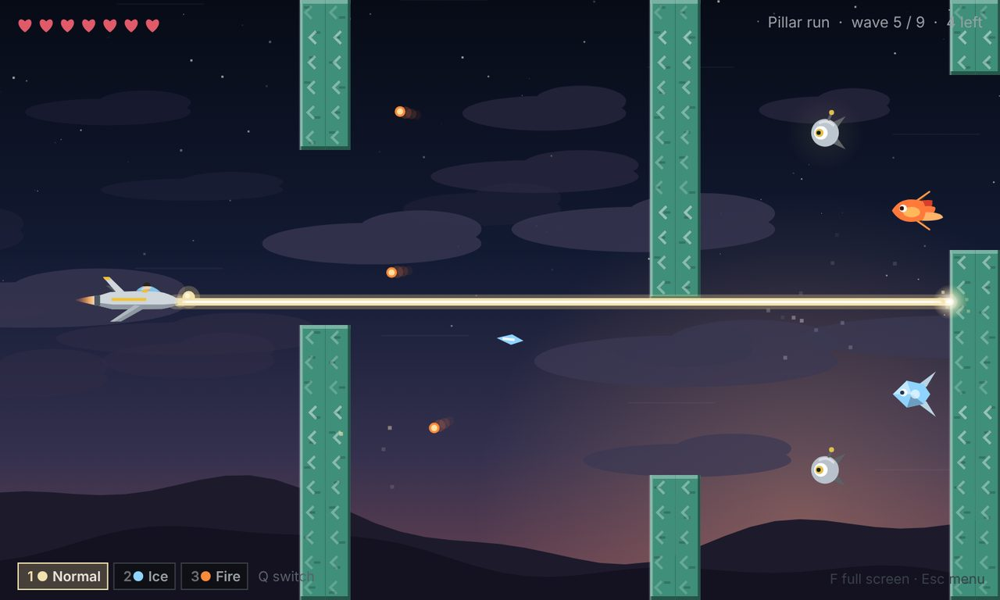
Pillar run: the terrain moves while all three enemy elements attack together.
Level design
I build each room around one specific objective. When the rooms are done, I distribute the rewards across the map and balance them.
Teach by failure, without killing. R3 has no text, and quicksand gives a new player time to climb out.
Ability gates. R4's sandfall needs a sphere with layers.
Remember and return. Rooms built for an exact number of layers are meant to be revisited.
Optional side rooms. Always a reward, never mandatory. The layer door in R2, right at the start, needs six layers, a fully upgraded sphere, and leads to the challenge room R20.
Reward exploring. Any tile can hide another one behind it. When something appears behind a wall you destroyed, it should feel like surprise mixed with accomplishment.
Logic first. Ice freezes, fire melts, a bomb waits for its button, and a wall you blew up stays broken.
The room I'm proudest of: R10
The puzzle combines two types of sphere, and you have to swap between them quickly.
R10behind a cracked wall in R9
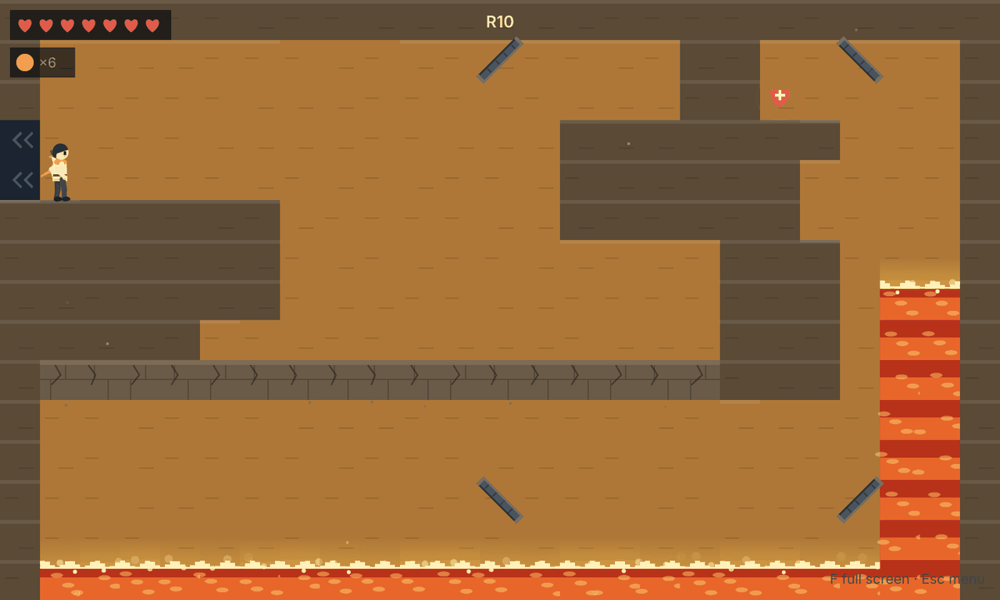
Mini walls, crumbly floor and very hot lava, with a max-health upgrade at the top.
Room
What's there
Gated by
R1 Crash site
The jet, a capsule, the mechanic behind cracked walls, a cracked floor down to R21
Turrets, a brute, crumbly floor, +1 layer. The high road ends at a sandfall.
—
R4A
Very hot lava, a capsule
Sandfall (Matryoshka)
R5 The eater
Turrets, cracked spikes, +1 layer, an upper exit to R11
—
R6 Cracked ceiling
Cracked spikes over lava
—
R7 Junction
A brute, a turret, an eater, bomb +1 layer behind cracked walls
—
R8 Hedgehog
Boss
—
R9 Matryoshka
Matryoshka, sandfalls, a capsule, bomb +1 layer. Cracked walls hide two exits.
Boss gate
R10
Mini walls, crumbly floor, very hot lava, max health +1
Cracked wall (bomb)
R11
Ice, permafrost, absorbers, floor spikes, a hidden sticky +1 layer
—
R12
A brute, a flyer, very hot lava, a key
via R4A
R13
Lava, the fire sword, +1 layer, a jet part behind a locked door
Key from R12
R15
A maze of cracked walls, the bomb sphere, max health +1
—
R16
Permafrost, mini walls, two brutes, a key and door, the ice sword, a heart
—
R18 (small)
The sticky wheel
via R16
R19 (small)
A guardian, max health +1
Cracked wall (bomb)
R20 (challenge)
No sphere. A flyer, a turret, crumbly floor, spikes, max health +1.
Layer door (6)
R21
The Slugger, a jet part
Cracked floor in R1 (bomb)
R22
Very hot lava, no reward yet
via R15
R23
Planks, an absorber, no reward yet
via R21
R20challenge room · sphere off
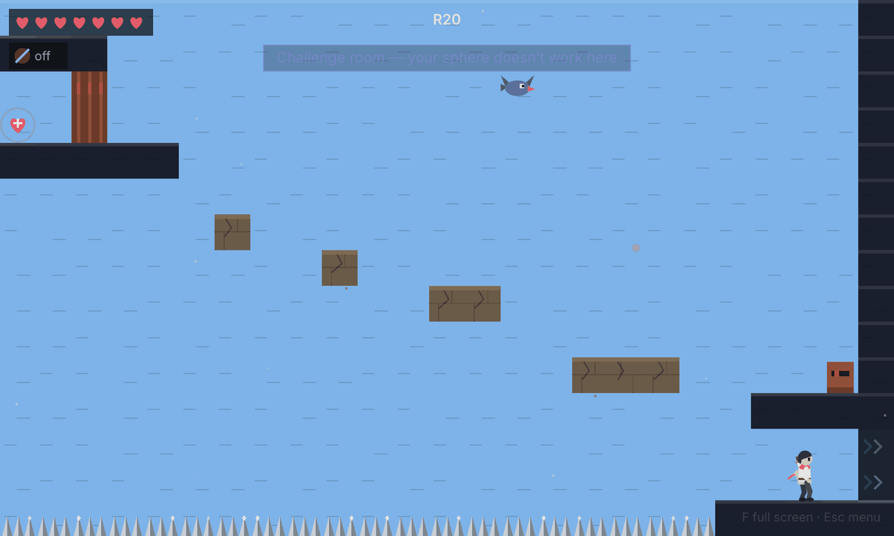
A challenge room answers the freedom problem directly. The sphere is off, so nothing here can be skipped.
MapM / Tab
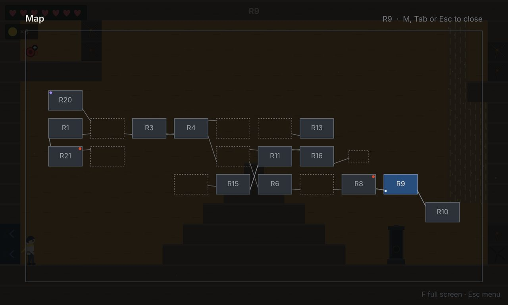
The map shows the rooms you've visited, placed by following their exits.
My own editors
I wanted a quick way to test the ideas in my head, so I built a level editor and a wave editor. Being able to play an idea minutes after imagining it changed the design along the way.
Level editor. Paint rooms tile by tile, link them through their exits, and pair doors with keys, even across rooms. Set layer-door requirements, hidden tiles, plank angles and challenge rooms. Write NPC dialogue and design notes, tune the game's numbers, lay out the HUD, import custom tiles, play any room instantly and export a standalone build.
Wave editor. It follows the one from my shoot-'em-up. Build waves enemy by enemy, add rules like "when the gunner falls, the rest enrage", add terrain, moving terrain and doors, and test-fly any wave.
Sound
Every sound in the demo is made in code with Web Audio: no audio files and no music. Footsteps change with the surface (sand, stone, wood, gravel, ice), sounds are panned by where they happen in the room, and held sounds loop for as long as they last: the jet engine, quicksand dragging you down, the sticky wheel rolling, and a different beam sound for each element. Options has a volume for sound effects.
The story
Namir is a jet pilot, one of the best in his planet's air defence. His planet's scientists built a weapon, the TPS, a teleportation sphere. Terrorists heard about it and attacked. They destroyed the planet but couldn't find the TPS. Namir and his squad were sent to retrieve it first. They fought in the sky, his whole squad was wiped out, and his damaged jet crashed into the desert where the demo begins.
Namir means tiger in Arabic. In many mythologies, the Chinese ones for example, the tiger is a guardian. Namir is the guardian of the sky, which is why the enemy who killed his squad and brought down his jet is a dragon.
What changed along the way
Arrow to sphere. An arrow that dealt damage was too powerful as a core mechanic.
Arc slash to straight thrust. Precision and positioning instead of button spam.
Growing sphere to layer rings. A big sphere would have needed its own collision.
Bomb auto-detonation switched off. A bomb should only go off when you press the button.
Planks, then planks and mini walls. One you can jump through, one you can't.
Bombed walls now stay broken for good.
Numbers
The values the current demo ships with.
Value
Setting
What it means in play
Room
25 × 15 tiles, 32 px
Exactly one 800 × 480 screen, so every throw reads at a glance.
Run speed
230 px/s
About seven tiles a second.
Jump, gravity
620 px/s, 1450 px/s²
Hold Space to jump higher.
Health
3 → 7 hearts
Four +1 upgrades in the demo. Dying restarts the room with full health.
Quicksand
45% speed, 2.6 s
You sink, but there's time to climb out.
Sphere
580 px/s, 3 s
Straight line, no gravity, one at a time.
Teleport
0.26 s
Recharge 0.3 s after a teleport, 0.5 s after a break.
Sticky wheel
160 px/s
Rolling speed along surfaces.
Bomb
64 px, 3 damage
Two tiles of blast. Only on your button.
Sword thrust
52 px, 2 damage
0.2 s thrust, 0.34 s cooldown, 8 directions.
Jet
290 px/s, 3 health
Continuous beam, 7 damage per second.
What I learned
A good idea isn't enough
Warpbound had to wait until I had the design skill to do it justice, and the two smaller projects were how I got it.
Freedom has to be designed
Each power I give the player takes some control away from the level design, so each one needs a limit.
Try more than one approach, and test fast
The three jet parts come from a favour, a locked door and a boss. Building my own editors let me play a room minutes after imagining it.
Teleport anywhere you want, but the design still speaks.
The full game grows this slice into five areas (a main area, the desert, snow, magma and a destroyed city) with six bosses and abilities earned gradually. Flights between biomes become real shoot-'em-up levels, with a fast-travel machine waiting in each new biome and cleared flights replayable from the main menu for better scores. Next on the demo: the Hedgehog's new stun-and-finish fight, and rewards for R22 and R23.
After FiveTen I wanted to test my design skills in a completely different genre, and to show how I can turn a single phrase into a playable prototype. At first I had only one line:
"A shmup where you cannot shoot."
Everything else grew from it. The idea led to hypnosis, hypnosis led to the wizard, and the wizard led to the quartz. The goal of the project fits in three words: hypnotise and control.
The line came from a question about the genre's history. Space Invaders, Gradius and R-Type are legends, so why is the shoot 'em up almost gone today? My answer is that the genre followed a path with a dead end. Studios competed on one layer, difficulty. On arcade machines that made sense: a harder game meant more deaths, and more deaths meant more coins. The race led to bullet hell, which is a good genre, but it became so hardcore that it ended up belonging to a small group of players. There were exceptions, like the Cotton series and Ikaruga, but most games followed the same road. So I tried a different one.
Can a shoot 'em up work if the player cannot shoot?
I built it in HTML because I prototype fastest there, and the point was to try ideas quickly and play them.
How it plays
The wizard has no weapon. Holding Space scans the enemy in front of him with his crystal, and when the hypnosis ring closes, that enemy becomes an ally. He can hold two allies, and they fire only when the player tells them to, with limited ammo. A mission ends when every enemy is gone, captured or destroyed. The wizard has five hearts. Losing them all cracks the crystal and starts the sleep phase.
Spot
Approach
Scan
Control
Merge
Unleash
Enemy roster5 types
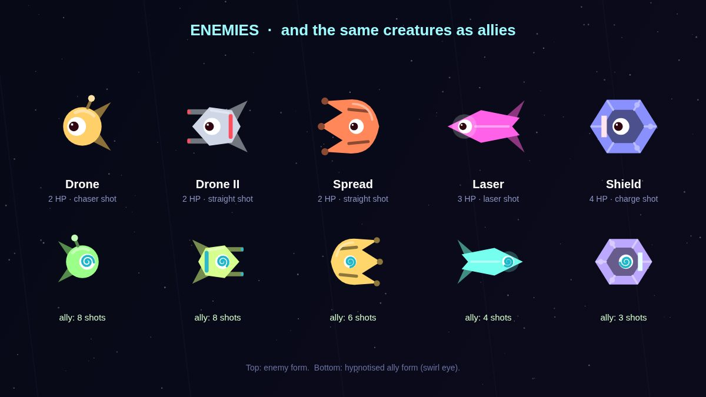
Top row: the five enemies. Bottom row: the same creatures as allies, with the hypnotised swirl in their eye and their ammo.
Design decisions
A capture has to be risked for
ProblemIf the scan were instant, there would be no challenge: no push and pull, no risk, only reward.
DecisionThe scan takes time, reaches only 245 px in front of the wizard and slows him to 78% speed. To take a strong enemy you have to fly close to it and stay there. The scanned enemy freezes and shakes, but it keeps shooting, 2.6 times as fast, with shorter warnings and worse aim. It's a survival instinct, so the capture stays dangerous until the ring closes.
If the reward is not risked for, there is no dopamine.
Weakened enemies are easier to take, up to 65% easier at their last hit point. That joins the two halves of the game: you weaken an enemy with your allies, then you take it.
Enemy
Capture at full HP
At 1 HP
Drone / Drone II
≈ 1.3 s
≈ 0.9 s
Spread
≈ 1.5 s
≈ 1.0 s
Laser
≈ 1.7 s
≈ 1.0 s
Shield
≈ 2.1 s
≈ 1.1 s
The scanreach 245 px
The cyan ring around the drone fills as the scan holds. The drone above it is red: it's about to shoot.
Two allies, not one or three
ProblemThe number of allies decides both how strong the player is and how many buttons they have to manage.
DecisionOne ally felt too limited. With three the game became easy: three allies firing together could reach every enemy on screen, and the threat disappeared. Each ally also has its own fire button, and a third one on top of moving, scanning and dodging felt unnecessary. Two felt balanced, in range and in the feeling of commanding two shooters. Capturing a third enemy replaces the oldest ally.
Allies fire on command, with limited ammo
ProblemThe game can't know which enemy the player wants to capture next. Allies that fired by themselves could destroy exactly the enemy the player was planning to take. And with unlimited shots, a Laser and a Shield together would be unstoppable.
DecisionAllies only fire when told to, and every ally has a few shots. When they run out, the ally is gone, which forces the player to keep capturing new ones. Holding Shift lines both allies up at the wizard's height, so with so little ammo, every shot is aimed instead of wasted.
The stronger the ally, the less ammo it has.
Ally
Shot
Ammo
Cooldown
Drone / Drone II
Single straight shot
8
0.22 s
Spread
Three-way shot
6
0.48 s
Laser
Piercing beam across the screen, 3 damage
4
0.72 s
Shield
A 1.2 s protective bubble around the wizard
3
1.2 s
As long as the wizard can scan and dodge, nothing in the game should make the player feel vulnerable, even with no allies at all.
Allies on command2 slots
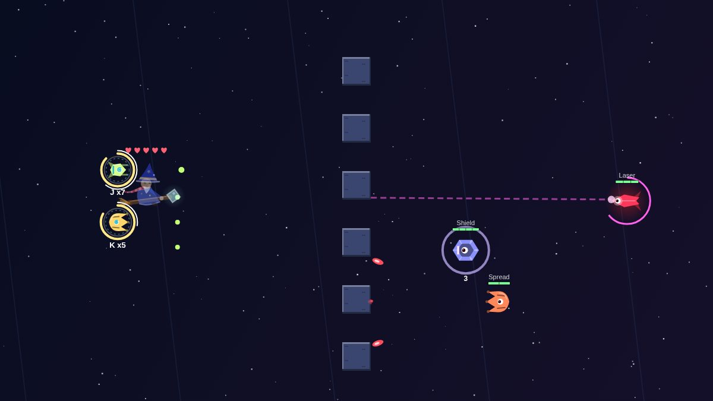
Two allies with their ammo rings. The pink dashed line is a Laser enemy aiming before it fires.
Losing your last heart isn't the end
ProblemI didn't want the run to end the moment health ran out. Old arcade shmups had continues for that. I wanted the same second chance, but tied to the lore.
DecisionWhen the last heart goes, the quartz cracks, the hypnosis is released for a moment and the wizard falls asleep. Normal controls wouldn't feel right for a sleeping wizard, so he drifts down with flappy-bird physics and the player taps to keep him in the air. Any hit, wall or screen edge ends the run. Survive and the crystal repairs itself, and the hearts come back one at a time.
TuningThe sleep phase started at ten seconds. You usually lose your last heart when the screen is full of enemies, and ten seconds in front of them was impossible to survive whatever you did. Six seconds is the point where you feel the consequence but still have a real chance.
BetrayalWhile the wizard sleeps, his allies turn back into enemies. At first they attacked instantly from right beside him, which was too harsh. Now they fly back to where they were captured and hold their fire until they get there. The game never explains why they betray you. If it does, it will be part of the final realisation.
Sleep phase6 s
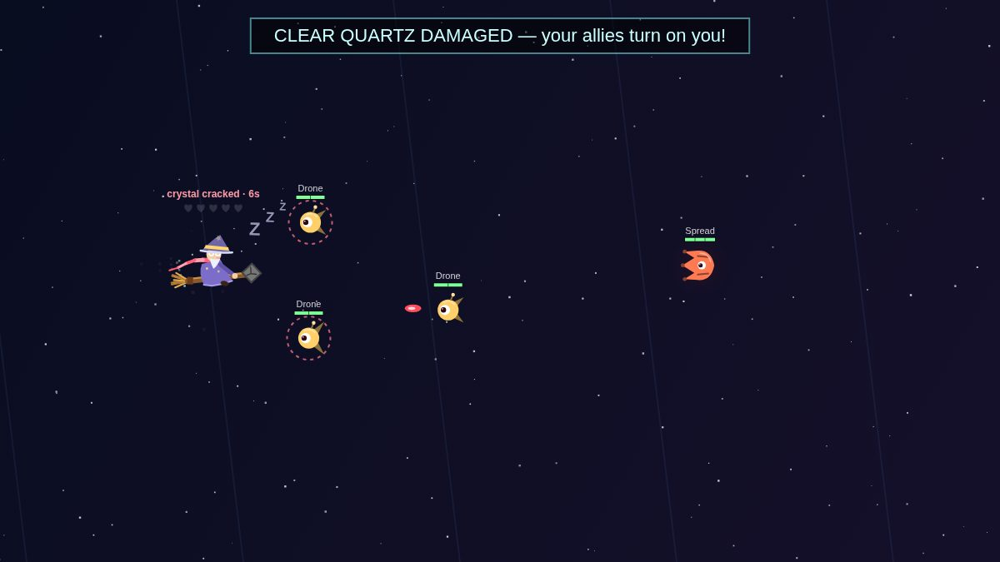
The crystal has cracked. The countdown sits over the empty hearts, and the former allies head back to their posts.
Scared enemies huddle together
DecisionWhen an enemy drops to half its health or less, it flies to the nearest other enemy and the two fuse into a bigger one that takes turns using both of their attacks. In the lore the birds are too scared, so they huddle together, like in cartoons. While it flies to its partner the weakened enemy stops shooting, so the player can scan or destroy it on the way. Scanning a finished fusion doesn't capture it. The enemies get confused about what they were scared of, and the fusion breaks back into its two halves, which can't fuse again.
ChangeAt first both enemies had to be weakened. Now only the one that seeks the fusion does.
Drone + DroneTwin Eye
Drone + LaserLancer
Drone + ShieldSentinel
Drone + SpreadHydra
Laser + LaserCrossblade
Laser + ShieldCannon
Laser + SpreadTrident
Shield + ShieldFortress
Shield + SpreadCrab
Spread + SpreadKraken
Fusion forms10 pairs
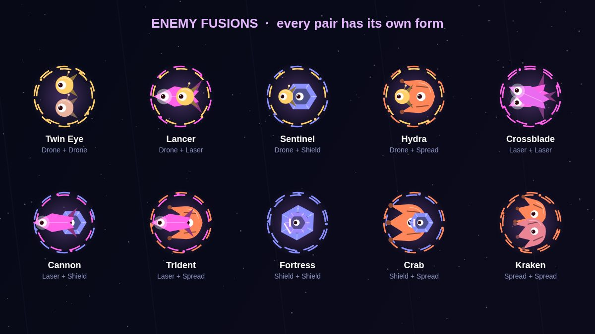
Every pair has its own form, combining both parents inside a two-colour ring.
Merging allies, and the ultimate
DecisionAllies merge for a different reason than enemies fuse. They aren't scared, they become stronger, because their commands are synchronised. Scanning fills a ring around the wizard. When it's full and he holds two allies, Tab merges them. The merge takes 2.2 seconds, and he moves at 35% speed while the two spiral together. The merged ally doubles each weapon's remaining ammo, and Q switches between the two weapons.
It takes both slots. Merging doubles the bullets, so if the player could capture a third enemy while holding it, nothing would stop them merging that one too. Merging is also the only way to the ultimate. Press O and the merged ally becomes one huge laser beam and is used up. The more ammo it has left, the stronger the beam, so there's a constant choice: spend the shots now, or save them for a bigger beam.
Ammo left
Ultimate damage
Beam height
Full, never fired
30
320 px
Half
≈ 17
≈ 170 px
One shot
3
20 px, a normal laser
Merging is my favourite mechanic. I think players will start wondering what two specific allies will look like together, and finding out is fun.
Ultimate100% power
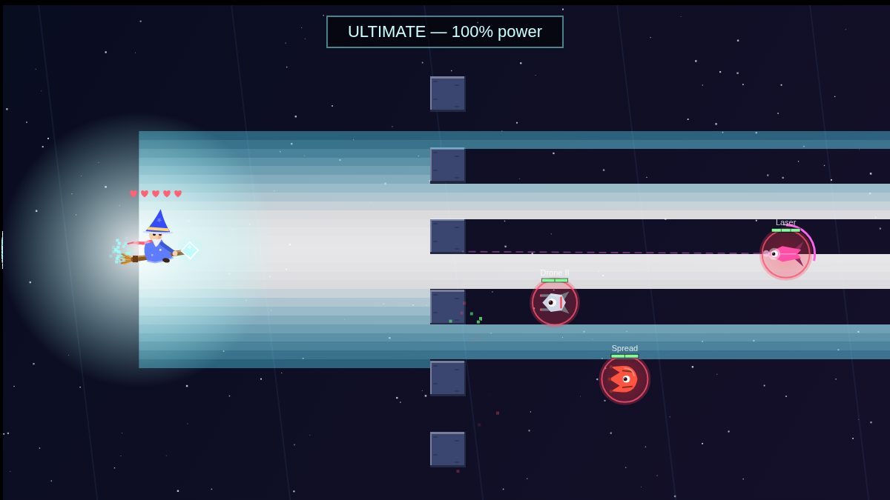
A merged ally spent at full ammo: the biggest beam the game has.
Every shot is announced
ProblemBullet hell asks the player to memorise walls of bullets. I wanted the challenge to come from reading enemies and making decisions.
DecisionBefore every shot, the enemy turns red and shakes, for about 0.4 seconds on a normal shot. A plasma shot charges for about 1.2 seconds while a blue ball grows on the enemy's nose. A laser shows a dashed aim line for about 0.75 seconds. Each bullet type has its own colour.
Colour
Bullet
Behaviour
Green
Chaser
Homes in on the wizard for about 2.6 s, then flies straight.
Red
Straight
Flies straight ahead.
Blue
Plasma
Long charge-up, then a large, slower ball.
Pink
Laser
An aim line shows where it will fire, then the beam.
SprintersA fast yellow arrow crosses the screen, with a warning one second before it arrives. Hitting it with an ally shot adds a bullet to every Drone and Spread shot, up to three. You can't know when one is coming, without allies you can't take it, and with allies you still have to aim, which is another reason the line-up button exists.
Enemy behaviour is the level design
Shoot 'em ups usually focus on tight controls, small hitboxes and patterns the player learns. Here the player catches enemies and decides live what to do with them, so the most important thing is how enemies behave. In that sense the game is closer to Pokémon or Pikmin than to a traditional shmup, with shmup logic and movement.
Each enemy flies in from the right, top, bottom or behind, then holds a position, follows a path, tracks the wizard's height, chases him, dives at him, or protects another enemy by staying between it and the wizard. An enemy can switch to a second behaviour when the wave thins out, and a whole wave can react to events: enrage, dive, retreat or call reinforcements.
The prototype's missions aren't a campaign. They're test subjects for the mechanics. Some finish in seconds, some take minutes, and I'm still adding new ones.
Mission
Enemies
What it tests
1 Tutorial
2 Drones
One circles, one weaves. The last one left starts chasing the wizard.
2 Clear All Enemies
4 Drones, 1 Spread
The drones zigzag. With three enemies left they stop and protect the Spread. The same enemies become a new problem halfway through.
3 Clear All Enemies II
3 Drones, 1 Spread
Two figure-8 drones switch to protecting the Spread when two enemies are left.
4 Scan All Enemies Without Shooting Them
1 fast Drone
Three times normal speed. Shooting it wastes ammo, so you scan it.
5 Zigzag Patrol
4 Drones, 1 Shield
The last enemy left dives at the wizard.
6 Last Stand
Shield, 2 Spreads, Laser, Drone II
Behind a wall of blocks. When the Shield falls the rest are enraged, and three drones arrive when one enemy is left.
7 Escape
1 Drone
Pillars scroll past fast. Fly through them to reach a drone that tracks your height, and scan it. Testing what happens when the player has cover.
Mission 7 — Escapepillars
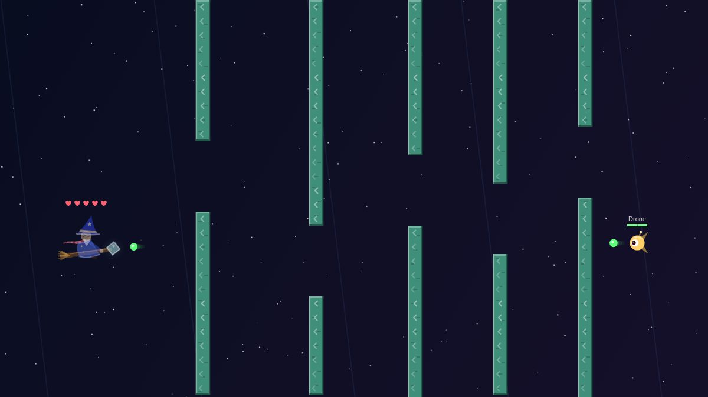
Mission 7's pillars. The idea works; the execution still needs work.
What playtesting showed
So far I'm the only playtester, and I found a strategy I never designed. A player who loves one pair of allies can keep it:
Use both allies until each has one shot left.
Let the wizard get hit on purpose and fall asleep.
Watch the allies betray him and fly back to their posts.
Survive the sleep phase.
Scan them again and recruit them with full ammo.
It's very hard, but it works. It came from three systems working together: limited ammo, the sleep phase and betrayal.
What changed during development
Fixed formations were dropped. The first waves came from sixteen fixed formations named after musical ideas, like chord, arpeggio and staccato. I used them until I could design each wave myself.
Betrayal became fairer. Allies used to turn on the wizard instantly. Now they return to their posts and hold fire until they arrive.
The sleep phase got shorter, from 10 to 6 seconds.
Every shot became readable. Enemies now shake and turn red before they fire, and each bullet type has its own colour.
Enemy fusion became one-sided. Only the enemy that seeks the fusion has to be weakened.
The hidden story
The wizard was looking for a quartz that grants all wishes, which he had read about in his magic books. He found it in a cave, stuck to a stick: the broom he rides. When he got close, the quartz activated, scanned him and hypnotised him. So the wizard is under hypnosis, and the quartz is the real player.
In the game
In reality
Enemies
Scared birds
Bullets
Rocks the birds throw
Scanning an enemy
The quartz hypnotises the bird too
The crystal cracks and the wizard sleeps
The hypnosis is released for a moment
Enemies fusing
Scared birds huddling together
A scanned fusion breaking apart
Confused birds forgetting what scared them
Allies merging
Hypnotised birds whose commands are synchronised
I want players to eventually ask one question, "why hypnosis?", and start forming theories, the same way FiveTen's medical clues do. At the end of the game the quartz breaks and the wizard sees reality, and finishing it unlocks a mode called Reality that shows what was really happening.
The story also helps the design. Because every enemy is an illusion, any enemy can appear and still make sense. If a dragon shows up, the wizard read books about dragons.
Numbers
The values the current prototype ships with.
Value
Setting
What it means in play
Wizard speed
360 px/s
8 directions, anywhere on the 1200 × 675 screen.
Speed while scanning
78%
Capturing slows you down.
Scan reach
245 px, ±46 px
In front of the wizard, about his height. Blocks stop it.
Hearts
5
1.1 s of invincibility after a hit.
Scanned enemy fire rate
× 2.6
The target panics.
Low-health ease
up to 65%
Less hypnosis needed as an enemy loses health.
Enemy fusion
≤ 50% health
The weakened enemy seeks a partner.
Fusion meter
≈ 6 s of scanning
Fills the ring that allows a merge.
Merge
2.2 s at 35% speed
The cost of merging your allies.
Sleep phase
6 s
First 1.2 s protected. Adjustable from 3 to 30 s.
Recovery
0.8 s, then 2.2 s
Hearts return one at a time. A hit stops it.
Each loop
+15% fire rate
After mission 7 the game loops and enemies shoot faster.
Scoring
Points
Capture an enemy
+250
Destroy an enemy
+100
Destroy a fused enemy
+400
Clear a mission
+150
Destroy a sprinter
+250
Ally bullet hit
+35
Ally laser or ultimate hit
+45
Take a key
+50
Hit on a Shield's shield
+20
What I learned
Enemy behaviour is the level design
When the player is catching enemies, placement, behaviour and objectives matter more than bullet patterns.
A coherent foundation creates freedom
Linking hypnosis with illusion made the core mechanics explainable, and it means almost any new enemy can belong in the game.
The ground of the game gives you the freedom.
Risk is what makes a reward feel good
A capture only feels good because the player had to risk something to get it.
Planned for the full game: a campaign, bosses, leaderboards, the ending and Reality mode, gamepad support, audio, and final art.
Arcade falling-block puzzle · Android · Live on Google Play
FiveTen
An arcade puzzle game built on addition. Falling pieces carry numbers. Line up three blocks that add up to the target, and let the scanner clear them before the board fills.
Role
Game design, programming, UI, systems and release. Everything except the music and some sound effects.
Development
About five months, from the start of development to release
Platform
Android, touch. Keyboard and controller also supported.
Target 10, third hit of five. The red line is the scanner.
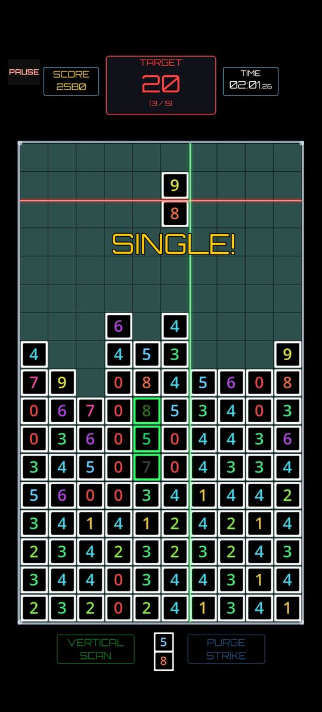
Target 20: the green Vertical Scan sweeps the columns.
The idea
FiveTen started with boredom in university classes. It made me think that almost any lesson could be turned into a game if enough creativity went into the problem. I also wanted to become a more technical game designer, so I picked a project small enough to learn an engine and go through the whole cycle, from first prototype to release.
The goal was simple: fun practice. Repeated arithmetic should feel like an arcade game, not an exercise. I didn't want a classic educational game with maths dropped into an existing structure. I wanted the maths to be the mechanic.
Can mathematics become the foundation of a real arcade puzzle game?
I chose addition because everyone uses it and it fits a falling-block structure. Multiplication makes numbers grow too fast and would have needed a different kind of game. The genre comes from games I love: Tetris for falling blocks, Puyo Puyo for connected pieces, Meteos for experimenting with the formula, and Lumines for clearing on a rhythm.
How it plays
Each piece is two connected number blocks. The player moves, rotates and drops it onto a 10 × 17 board. Three horizontally adjacent blocks that add up to the current target make a match. A scanner sweeps the board, and when it reaches that row the match clears. Five matches raise the target by five. Completing target 100 wins the game, and a full board ends it.
Example rows · target 1010 × 17 board
754135 + 4 + 1 = 10
361723 + 6 + 1 and 1 + 7 + 2: Stone Combo
A normal match on top. Below, two matches share one block, which is the Stone Combo.
The targets climb from 10 to 100, five matches at each step.
The game teaches all of this in six short pages, each with a live demonstration on a small board.
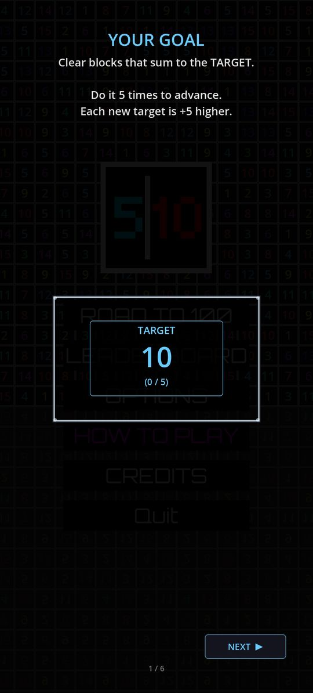
1 · The goal
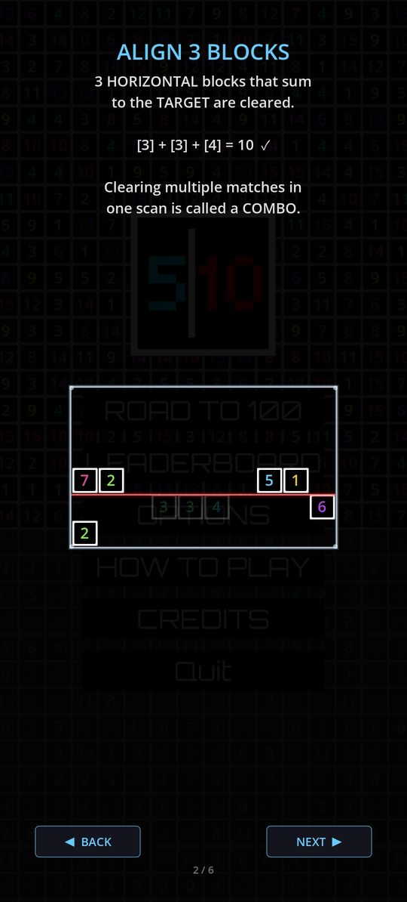
2 · Align 3 blocks
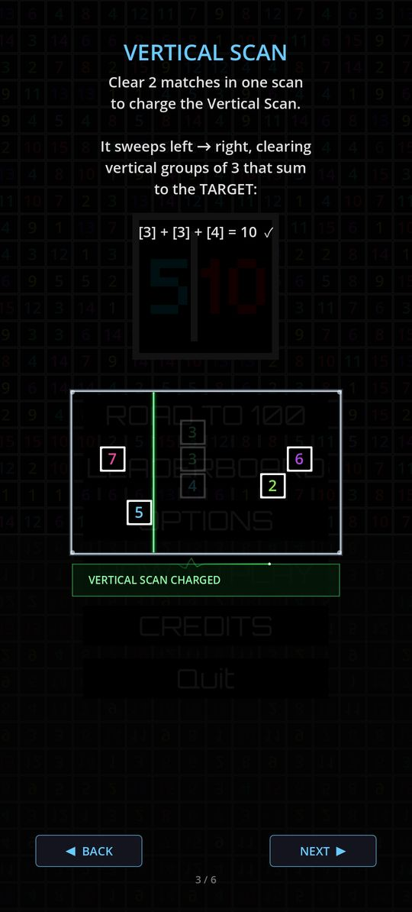
3 · Vertical Scan
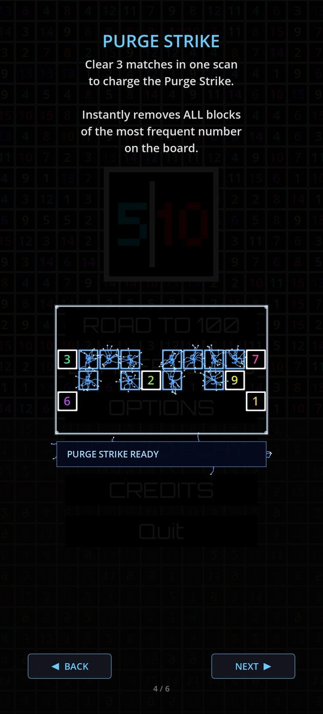
4 · Purge Strike
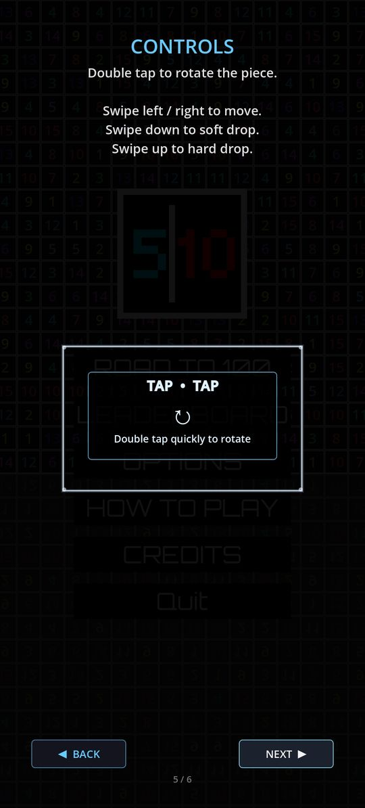
5 · Controls
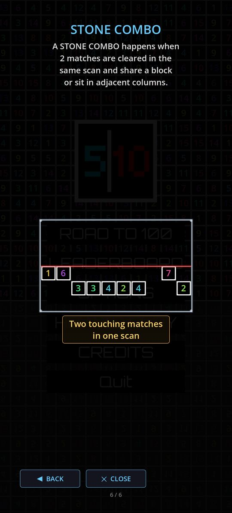
6 · Stone Combo
10
15
20
25
30
35
40
45
50
55
60
65
70
75
80
85
90
95
100
Design decisions
Three blocks per match, not two or four
ProblemThe number of blocks in a match decides how deep each calculation is and how big the board has to be.
DecisionTwo blocks were too easy and gave no depth. I tested four, and the board had to grow so much that the game became awkward on small screens and the numbers got harder to read. Three sits in the middle, and players already know the shape from match-three games.
Start at 10, stop at 100
DecisionStarting at 10 gives the game its identity: the target is ten, and you need five hits to move on. I considered 5, but it has too few practical three-number combinations, so the start felt cramped. I first planned to go up to 1000 and cut it to 100 to keep the game small. You can finish it in one sitting, and there is still enough climb to reward mastery.
The target is what gives each placement a purpose. It decides which calculation you want, whether to take the chance in front of you, how carefully to set up the fifth hit, and what to prepare for the next target.
A scanner instead of instant clears
ProblemIf matches cleared the moment they formed, players would think about nothing except building matches. Tracking combos would also have needed a separate countdown after every match.
DecisionA scanner sweeps the board and clears a match only when it reaches that row. The loop changes from "make a match, it clears" to "make the calculation, wait, anticipate, act", so timing matters as much as arithmetic. Matches the scanner finds in a row count as a combo, so no extra timer is needed. The scanner starts at about 0.60 seconds per sweep, gets faster with every new target, and has a minimum speed.
What playtesting showedWhen I played with full focus I started building a "tower of calculations". I prepared several matches, waited for the scanner to restart, then placed pieces so they all cleared in the same sweep. I never designed that as a mechanic. It came out of the board, the scanner and the pieces working together, and clearing a sweep I had planned for was the most satisfying moment in the game.
Small conditions can change player behaviour a lot without needing a new mechanic.
Make the player feel smart
ProblemA correct sum on its own just registers as a correct answer. I wanted it to feel like an achievement.
DecisionEach successful calculation earns a compliment about intelligence, turning the old idea that people who are good at maths are clever into positive feedback.
BRIGHT
SHARP
CLEVER
SMART
BRAINY
PERCEPTIVE
INSIGHTFUL
ASTUTE
BRILLIANT
GENIUS
MASTERMIND
The compliment is the last of six layers of feedback. The calculation clears, the score goes up, the target progresses, combos open up, abilities charge, and then the game tells you how clever that was. A global leaderboard on PlayFab gives the score a context. It shows rank, country, name, score, highest target and time.
Abilities are earned from the core loop
ProblemExtra mechanics easily turn into a second game the player has to learn.
DecisionBoth abilities are charged by combos, so playing the core game well is what unlocks them.
Good decisions
Combos
Abilities
More options
Better decisions
Vertical Scan, charged by a two-match combo. Players kept building correct vertical arrangements, and a horizontal-only game felt more restrictive than it needed to be. Vertical Scan sends a second scanner down the columns, which gives the player more ways to solve the board.
Purge Strike, charged by a three-match combo. In playtesting, players kept forcing one familiar formula. At target 10 they would wait for 5 + 4 + 1, the generator wouldn't deal those exact numbers, and the board filled with leftovers. Purge Strike removes the most common number on the board. That gets the player out of trouble and pushes them to look for other sums, so one bad habit isn't instantly fatal.
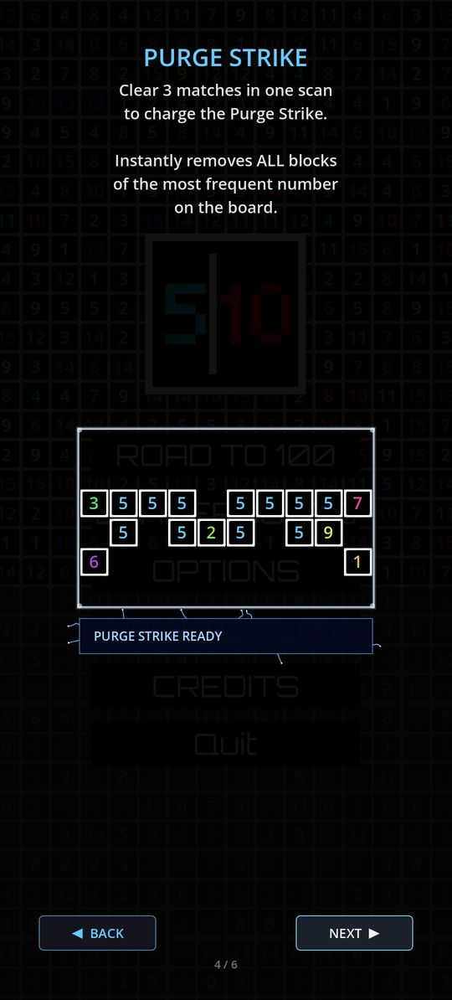
The forced-formula problem: a board full of fives, and Purge Strike ready.
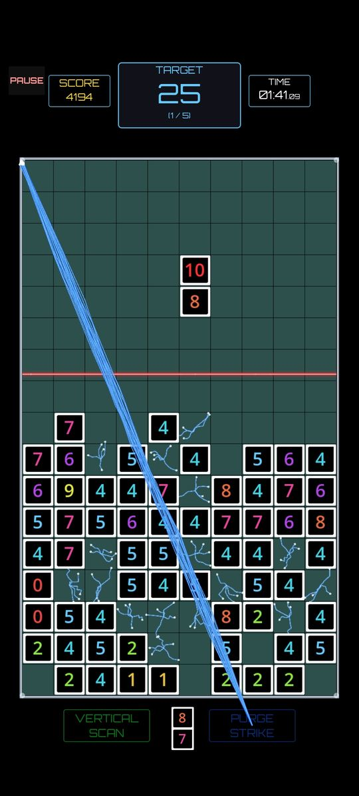
Purge Strike in a real game at target 25.
The number generator works from the current target, so useful calculations stay possible without the answer becoming predictable, and it avoids dealing the same pair over and over.
The Stone Combo was found, not planned
What happenedWhile experimenting I noticed that two groups of three can share exactly one middle block. That makes a five-block row holding two valid calculations, like the second row in the example above.
DecisionIn the game's own words, a Stone Combo is two matches cleared in the same scan that share a block or sit in adjacent columns. I made it a named move worth 60 points, more than twice a normal match. The name comes from killing two birds with one stone. It does more with less board space, and it is my favourite mechanic in the game because it is the cleanest form of mastery FiveTen has.
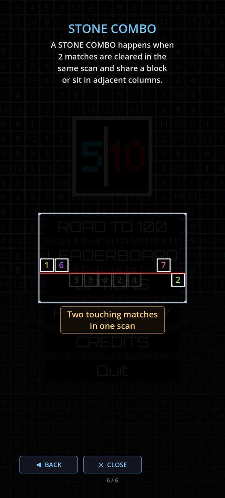
3 + 3 + 4 and 4 + 2 + 4 share the middle 4, and one scan clears both.
Controls built for a thumb
DecisionFiveTen was designed for touch first. Rotation is a double tap because an accidental rotation hurts more than any other input mistake. Swipes have thresholds and a dead zone for diagonals, holding a direction uses delayed auto-shift, and a hard drop is told apart from a normal soft drop.
Touch
Action
Keyboard / controller
Horizontal swipe
Move left or right, repeating with delayed auto-shift
Left / Right
Swipe down
Soft drop
Down
Swipe up
Hard drop
Up
Double tap
Rotate
Accept
The hidden story
The game looks strangely medical, and that's on purpose. FiveTen is secretly a defibrillator scene. The board is a patient and the player is trying to save its life. The scanner works like a medical scan, Vertical Scan uses a heartbeat line, and Purge Strike is the paddles.
I never explain it. Players notice the clues, wonder why a puzzle game looks like a hospital machine, and build their own theory. When they win, the board thanks them for saving its life and flies away to see its family. The ending is light and unexpected, and it makes the whole visual language make sense at once.
Numbers
The values the released game ships with.
Value
Setting
What it means in play
Board
10 × 17
Sized so the numbers stay readable on a phone.
Match
3 blocks
Horizontally adjacent, summing to the target.
Targets
10 → 100, +5
Five matches per target.
Scanner
0.60 s, × 0.92
Per sweep at the start, then faster with each new target, down to about 0.15.
Vertical Scan
2-match combo
Charges the column scanner.
Purge Strike
3-match combo
Removes the most common number on the board.
Scoring
Points
Soft drop
+1 per step
Hard drop
up to +20, by distance
Normal match
+25
Stone Combo
+60
Combo
+50 base, +10% per level after the base
Target completed
target × 50
Time bonus, end of run
seconds played × 10
What I learned
Scope is a design skill
The danger was never a lack of ideas. It was losing control of the scope. Every idea had to pass four questions: does it support the core, does it add a meaningful experience, does it fit the scope, and does removing it damage the game?
Good game design is not about having ideas. It is about having the ability to remove and add ideas without damaging the core experience.
Watch what players do, not what you expect
The Stone Combo and the tower of calculations, two of the strongest things in FiveTen, came from playing the game, not from the plan.
Depth doesn't need complexity
The scanner is a simple rule. Combined with falling pieces, targets, anticipation and combos, it creates a deep space of decisions. The abilities work for the same reason: they give the player new ways to use the same calculation, not a new game to learn.
Sometimes the strongest design is the smallest set of rules that produces the most interesting player behaviour.
About
Hi, I'm Abdessamed. I design games.
I'm Mohammed Abdessamed Nouioua, "Abdou" or "Samet" for short, a game designer based in Istanbul. I've designed and built three games: FiveTen, an arcade number puzzle released on Google Play, and two playable browser demos, the metroidvania Warpbound and the shoot 'em up Clear Quartz Wizard.
Each one started from a single question. Can mathematics be the core of an arcade game? Can a shoot 'em up work if you can't shoot? How much freedom can a player have before the level design stops mattering? Then I look for the smallest set of rules that answers it.
I give every power a limit, I cut ideas that don't serve the core, and I watch what players actually do. Some of my favourite mechanics, like FiveTen's Stone Combo, came from playing, not from the plan. To test ideas fast, I build my own tools, like the level and wave editors behind Warpbound.
I'm looking for a game design role at a studio, and I'm open to working anywhere.